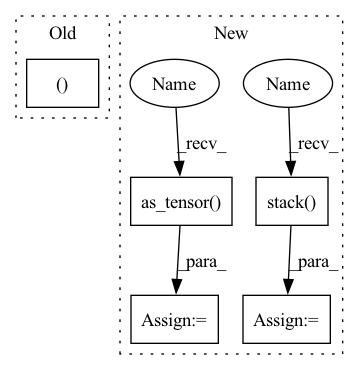

Pattern ID :5569

Before Change
// Select data
data, labels = self.dataloader[self.data_idx // self.dataloader.batch_size]
data, labels = data[0:self.num_data_points], labels[0:self.num_data_points]
data = data.to(**setup)
labels = labels.to(device=setup["device"])
After Change
for data_point in range(self.num_data_points):
datum, label = self.dataloader.dataset[pointer]
data += [datum]
labels += [torch.as_tensor(label)]
pointer += server_payload["data"].classes
data = torch.stack(data).to(**self.setup)
labels = torch.stack(labels).to(device=self.setup["device"])
// Compute local updates
In pattern: SUPERPATTERN
Frequency: 4
Non-data size: 5
Instances
Fragment ID: 19700782
Project Name: jonasgeiping/breaching
Commit Name: 9970fc2cd79885d2710383036d5ff70dc67b6b03
Time: 2021-09-05
Author: jonas.geiping@googlemail.com
File Name: breaching/cases/users.py
M Class Name: UserSingleStep
N Class Name: UserSingleStep
M Method Name: compute_local_updates(2)
N Method Name: compute_local_updates(2)
M Parent Class: torch.nn.Module
N Parent Class: torch.nn.Module
M File Name: breaching/cases/users.py
N File Name: breaching/cases/users.py
M Start Line: 43
M End Line: 51
N Start Line: 43
N End Line: 57
'>
Before Change
for neuron, label in neuron_dict.items():
self.remask(layer=layer, neuron=neuron)
return mark_list, mask_list, entropy_list
def remask(self, layer: str, neuron: int):
// no bound
atanh_mark = torch.randn(self.data_shape, device=env["device"])
After Change
loss_list.append(loss)
mark_list = torch.stack(mark_list)
if use_mask:
mask_list = torch.stack(mask_list)
loss_list = torch.as_tensor(loss_list)
return mark_list, mask_list, loss_list
def remask(self, _input: torch.Tensor, _label: torch.Tensor, layer: str, neuron: int,
label: int, use_mask: bool = True, validate_interval: int = 100) -> (torch.Tensor, torch.Tensor, float):
'>
Fragment ID: 19700776
Project Name: ain-soph/trojanzoo
Commit Name: 1684c28ef38502abb83d37beb845b69007e33274
Time: 2020-07-07
Author: ain-soph@live.com
File Name: trojanzoo/defense/backdoor/abs.py
M Class Name: ABS
N Class Name: ABS
M Method Name: get_potential_triggers(2)
N Method Name: get_potential_triggers(1)
M Parent Class: Defense_Backdoor
N Parent Class: Defense_Backdoor
M File Name: trojanzoo/defense/backdoor/abs.py
N File Name: trojanzoo/defense/backdoor/abs.py
M Start Line: 51
M End Line: 62
N Start Line: 64
N End Line: 89
'>
Before Change
// Select data
data, labels = self.dataloader[self.data_idx // self.dataloader.batch_size]
data, labels = data[0:self.num_data_points], labels[0:self.num_data_points]
data = data.to(**setup)
labels = labels.to(device=setup["device"])
// Compute local updates
After Change
for data_point in range(self.num_data_points):
datum, label = self.dataloader.dataset[pointer]
data += [datum]
labels += [torch.as_tensor(label)]
pointer += server_payload["data"].classes
data = torch.stack(data).to(**self.setup)
labels = torch.stack(labels).to(device=self.setup["device"])
// Compute local updates
'>
Fragment ID: 19700778
Project Name: jonasgeiping/breaching
Commit Name: 9970fc2cd79885d2710383036d5ff70dc67b6b03
Time: 2021-09-05
Author: jonas.geiping@googlemail.com
File Name: breaching/cases/users.py
M Class Name: UserSingleStep
N Class Name: UserSingleStep
M Method Name: compute_local_updates(2)
N Method Name: compute_local_updates(2)
M Parent Class: torch.nn.Module
N Parent Class: torch.nn.Module
M File Name: breaching/cases/users.py
N File Name: breaching/cases/users.py
M Start Line: 43
M End Line: 51
N Start Line: 43
N End Line: 57
'>
Before Change
if i == 0:
layer_output_all = layer_output
else:
layer_output_all = torch.cat((layer_output_all, layer_output))
layer_output_mean = torch.mean(layer_output_all, dim=0)
After Change
idx.append(k)
class_dataset = torch.utils.data.Subset(self.mix_dataset, idx)
class_input, class_label = dataset_to_list(class_dataset)
class_input = torch.stack(class_input)
class_label = torch.as_tensor(class_label, dtype=torch.long)
class_dataset = TensorDataset(class_input, class_label)
class_dataloader = self.dataset.get_dataloader(mode="train", dataset=self.class_dataset, num_workers=0)
layer_output_all = [] // TODO
'>
Fragment ID: 19700779
Project Name: ain-soph/trojanzoo
Commit Name: 4adb8ae3e90425855448bfd8fc212f8d91f5332c
Time: 2021-06-01
Author: ain-soph@live.com
File Name: trojanvision/defenses/backdoor/spectral_signature.py
M Class Name: SpectralSignature
N Class Name: SpectralSignature
M Method Name: get_clean_dataloader(1)
N Method Name: get_clean_dataloader(1)
M Parent Class: BackdoorDefense
N Parent Class: BackdoorDefense
M File Name: trojanvision/defenses/backdoor/spectral_signature.py
N File Name: trojanvision/defenses/backdoor/spectral_signature.py
M Start Line: 114
M End Line: 126
N Start Line: 113
N End Line: 125
'>
Before Change
// Default return value. Erring on the side of caution here by
// being super verbose.
return [([], [])]
After Change
// Next, let"s try the infinite pairs.
try:
infinite_pairs = torch.as_tensor(
cofaces[1][dim], dtype=torch.long
)
except IndexError:
infinite_pairs = None
if infinite_pairs is not None:
print("infinite_pairs =", infinite_pairs)
// "Pair off" all the indices
max_index = torch.argmax(x)
fake_destroyers = torch.empty_like(infinite_pairs).fill_(max_index)
infinite_pairs = torch.stack(
(infinite_pairs, fake_destroyers), 1
)
print("infinite pairs, fixed =", infinite_pairs)
return result
'>
Fragment ID: 19700775
Project Name: aidos-lab/pytorch-topological
Commit Name: 0dd25924d9fd7691de14281351dcee1edd8cfc26
Time: 2021-12-21
Author: bastian@rieck.me
File Name: torch_topological/nn/cubical.py
M Class Name: Cubical
N Class Name: Cubical
M Method Name: _extract_generators_and_diagrams(4)
N Method Name: _extract_generators_and_diagrams(4)
M Parent Class: nn.Module
N Parent Class: nn.Module
M File Name: torch_topological/nn/cubical.py
N File Name: torch_topological/nn/cubical.py
M Start Line: 88
M End Line: 119
N Start Line: 74
N End Line: 141